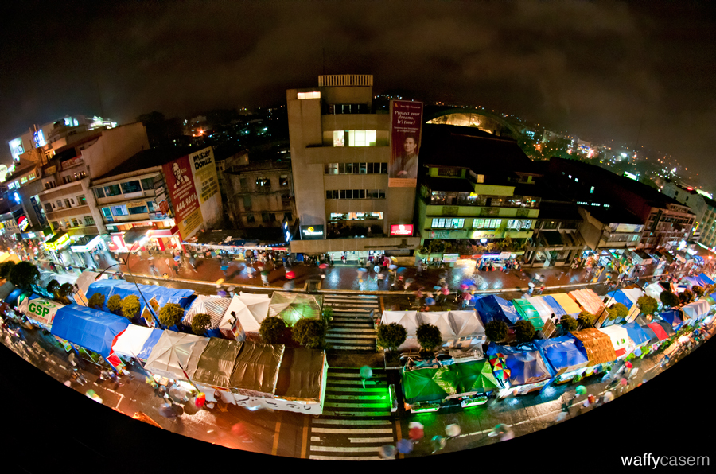

Welcome to Baguio City Life
Baguio's, City life. As all know that the main reson Tourist come to baguio is because of its climate, Baguio is 8 degrees cooler on the average than any place in lowlands. When Manila sweats at 35 degrees centigrade or above, Baguio seldom exceeds 26 degrees centigrade at its warmest. Baguio is very wet during the Philippine rainy season, which is from June to October. It gets the biggest amount of rainfall in the country, twice the volume of rainfall in the country as compared to Manila. However from November to May, Baguio becomes a tropical paradise, a refreshing break from the hot and humid Philippine climate. Christmas season is when Baguio glows with the nippy winter air. In the summer month of March, April, May, Baguio lives up to its title as the “”Summer Capital of the Philippines when thousands of visitors from the lowlands and Manila take their annual exodus to the city to cool off. Casual clothing is recommended worn with jackets or sweaters in the late afternoons or evenings.
popular Locations
- City Market
- BAGUIO CITY, Benguet, Philippines — Freelance writer Luchie Maranan describes herself as “laking-palengke” (someone who grew up in the public market), as she remembers how the city's marketplace gave her migrant family an opportunity to have a better life in a new city after the war in the late 1940s.
- Session Road
- Session Road marks Baguio's center of commercial activity. It is home to many savvy restaurants, bars, surplus boutiques (ukay-ukay), hotels, bakeries, movie houses, and drugstores. 
- Loakan airport
- Baguio City a small city but also have an airport but Loakan airport was closed to commercial flights over a decade ago because of the reported difficulty in the landing of the aircrafts during bad weather condition but the same remains open to chartered and military flights.